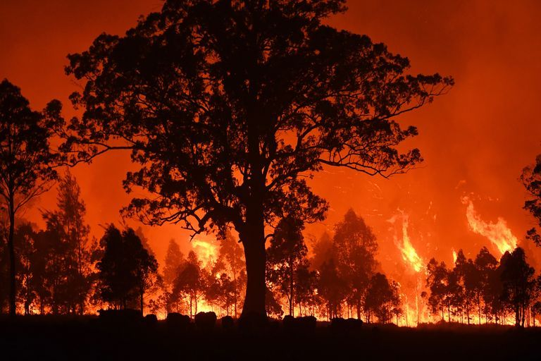
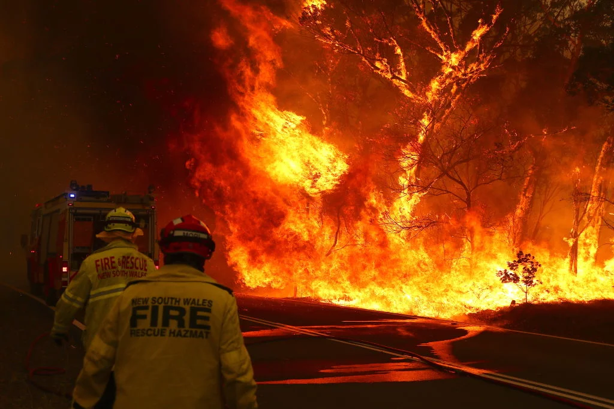

Background
Bushfires are a natural and complex part of the Australian environment. The causes of these fires are a combination of weather and vegetation and a spark of either natural or human influence. The impact of high-intensity bushfires can be devastating to the environment and community. Not only the intensity of the bushfire but the extent of the fire. Impacts on wildlife, property and water resources, and the effects of radiant heat and smoke cause serious damage to infrastructure and life.

Summary
Whilst Australia is no stranger to bushfires the Blacksummer: 2019-2020 Australian bushfires were unprecedented. In combination with exceptionally dry conditions, higher than average temperatures, strong winds, and a lack of soil moisture enabled these fires to burn over the course of a couple months. Droughts and dry weather reached an all-time high and the risk of wildfire outbreak were all but guaranteed. Whilst the exact cause of the fire is not known, early fires in central Queensland are stated to be confirmed. This fire was catastrophic, claiming the lives of humans and animals, affecting ecosystems and destroying infrastructure sparking a state of national emergency with an estimated cost of $78-88 billion in infrastructure and economic losses.

Event Timeline
The Beginning
During the months of September and November, Australia experienced its driest spring on record. The first major bushfire had begun before the arrival of spring in June which then spun out of control during the occurrence of fires at the beginning of September of 2019.The fire had significantly worsened at the beginning of November 2019 through prolonged droughts and increasing temperatures.
Crisis
On November 11, 2019 a state of emergency was declared, and overseas assistance was deployed on December 8, 2020. During this time Australia experiences its hottest day in recorded history as the fire continues to worsen.On 21 December 2019, A bushfire in the East Gippsland region of Victoria began to create its own weather where its smoke clouds create thunderstorms which lead to more fires and on the 28th December, evacuation of Gippsland begins.
A National Crisis
Australia would go on to open 15 South Coast bushfire evacuation centers and a national state of emergency is declared, whilst in Victoria national state of disaster is declared. During mid-January a wave of heavy rain brings some relief however nowhere near enough to distinguish the fires.Droughts, high wind speeds continue to spread the fire throughout January to the beginning of February. During mid February, a heavy rainstorm allows firefighters to contain the NSW fires, whilst Victoria continues to battle them. The fires are finally extinguished or contained by March, 2020 - nine months after the first fires began.
Statistics
Spread
Spread
Thousands of fires were active between September 2019 - March 2020 at around 15,000 across the country. Over 17 million hectares were burned and around 250 million tonnes of CO2 was released - around half Austalia's annual emissions.
Death Toll
Death Toll
During the fires 33 people, including 9 firefighters died in the bushfires whilst 3000+ homes were burned. Whilst poor air quality as the result of the fires have caused a further 417 deaths.
Environmental Impact
Enviromental
Impact
In January of 2021 an estimated 1.25 billion animal lives were lost after the fires, however the number is much higher. The WWF reports that over 3 billion animals were lost or displaced by the fires, pushing many threatened species to the brink of extinction.